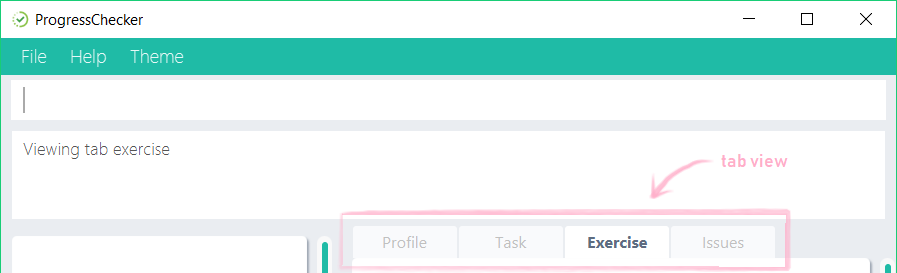

Overview
ProgressChecker is a desktop application for CS2103/T students to have a centralized hub that tracks their learning progress and project development throughout the module. The current release is meant to be used alongside with CS2103/T module website. ProgressChecker has a JavaFX GUI, but users will interact with it via CLI for efficiency.
Summary of contributions
-
Major enhancement: added the ability to view and answer weekly exercises taken from CS2103/T module website
-
What it does: allows students to view exercises by week and save their answers down for it. Answers are stored automatically and loaded the next time the software runs.
-
Justification: students face significant issues in finding or saving their exercises answers down in the module website for revision purposes; now they can easily do those with this feature
-
Highlights: This enhancement touches on all 4 components in the code base. It required an in-depth analysis of the existing architecture on how each components work with one another in order to implement it in an optimal way.
-
Credits: Much of the implementation was heavily inspired by the existing code base that has originally implemented the listing, modifying and storing of persons.
-
-
Minor enhancement: added a view command that allows the user to navigate between different window tabs of information
-
Code contributed: [Functional code] [Test code]
-
Other contributions:
-
Project management:
-
Managed listing of type.epic and type.stories issues on issue tracker to kickstart the team’s type.task issues management
-
-
Enhancements to existing features:
-
Documentation:
-
Community:
-
Contributions to the User Guide
Given below are sections I contributed to the User Guide. They showcase my ability to write documentation targeting end-users. |
Viewing a different tab : view OR v [since v1.5]
You can change the tab view to show either Profile, Task, Exercise, or Issues.
Format: view TYPE OR v TYPE

By default, the exercise tab shows exercises from the latest available school week. You can view the exercises in other weeks as well.
Format: view exercise WEEK_NUMBER OR v exercise WEEK_NUMBER
Notes:
-
TYPErefers to the tab names you see in the GUI:profile,task,exercise, orissues. -
WEEK_NUMBERrefers to the school week number and must be a positive integer in the range of 2 to 112, 3, …, 11
Examples:
-
view task -
view exercise -
view exercise 5
Answering an exercise : answer OR ans [since v1.4r]
You can answer an exercise based on the question index. Your answer will be saved automatically upon answering.
Format: answer QUESTION_INDEX ANSWER
| If you accidentally overwrite your answer to an exercise, you can undo the change as this is an undoable command! To find out how you can achieve this, check out the example section for this command or look at the undo and redo commands. |
Notes:
-
QUESTION_INDEXrefers to the question index shown in the GUI and it must be of the formatWEEK_NUMBER.SECTION_NUMBER.QUESTION_NUMBER, e.g. 2.1.1, 3.2.5, 6.1.7

You can see if an exercise has been answered by looking at the color of the question index label. The colors are as shown in the image above, where green means it has been answered and red means otherwise. An exercise’s SECTION_NUMBERis directly adopted from CS2103/T’s website.
Examples:
-
answer 2.1.1 Procedural languages work at simple data structures and functions level -
answer 3.5.2 a. Both are UML diagrams.
u(reverses theanswer 3.5.2 a. Both are UML diagrams.command) -
answer 3.5.2 a. Both are UML diagrams.
u(reverses theanswer 3.5.2 a. Both are UML diagrams.command)
r(reapplies theanswer 3.5.2 a. Both are UML diagrams.command)
Contributions to the Developer Guide
Given below are sections I contributed to the Developer Guide. They showcase my ability to write technical documentation and the technical depth of my contributions to the project. |
Toggling between tab views
Current Implementation
This command toggles the view between the different type of tabs in the software.
It inherits Command and executes on an Event Driven design between the Logic and UI component.
Suppose that the user is on the Task tab and wants to toggle to the Exercise tab. The user executes a new Command, view exercise, to switch to the Exercise tab. The Sequence Diagram below shows how the components interact with each other.
view exercise command (part 1)
Note how the Logic simply raises a TabLoadChangedEvent when the view command gets executed. The TabLoadChangedEvent is implemented as follows:
|
public class TabLoadChangedEvent extends BaseEvent {
public final String type;
public TabLoadChangedEvent(String type) {
this.type = type;
}
@Override
public String toString() {
return this.getClass().getSimpleName();
}
public String getTabName() {
return type;
}
}The diagram below shows how the EventCenter reacts to that event, which eventually results in the UI updating to which tab view is to be in selection.
view exercise command (part 2)
The UI scene’s elements are automatically populated in MainWindow.java due to using JavaFX FXML Controller. That is, a reference to a particular UI element will be available as long as it has its fx:id specified in MainWindow.fxml.
|
The code snippet below shows how the UI component executes the toggling of tab view upon receiving the event change.
@Subscribe
private void handleTabLoadChangedEvent(TabLoadChangedEvent event) {
logger.info(LogsCenter.getEventHandlingLogMessage(event));
SingleSelectionModel<Tab> selectionModel = tabPlaceholder.getSelectionModel();
switch (event.getTabName()) {
case "profile":
selectionModel.select(profilePlaceholder);
break;
case "task":
selectionModel.select(taskPlaceholder);
break;
case "exercise":
selectionModel.select(exercisePlaceholder);
break;
case "issues":
selectionModel.select(issuePlaceholder);
break;
default:
selectionModel.select(selectionModel.getSelectedItem());
}
}View, answer, and save for an exercise
Current Implementation
This command allows user to answer an exercise based on the question index shown in the software.
It inherits UndoableCommand and executes through all four components in the code base.
Suppose that the user wants to answer an exercise with index 11.1.1. The user executes a new Command, ans 11.1.1 a, to answer the exercise. The Sequence Diagram below shows how the components interact with each other.

ans 11.1.1 a command (part 1)
Note how the Model simply raises a ProgressCheckerChangedEvent when the ProgressChecker data has been changed, instead of asking the Storage to save the updates to the hard disk.
|
The diagram below shows how the EventsCenter reacts to that event, which eventually results in the updates being saved to the hard disk.
ans 11.1.1 a command (part 2)
Before the Logic component executes the Undoable Command which calls the Model, it prepares the exercise that needs to be updated by going through the internal list of exercises stored in model. The code that searches for the exercise is as follows:
for (Exercise e : exerciseList) {
if (e.getQuestionIndex().toString().equals(questionIndex.toString())) {
exerciseToEdit = exerciseList.get(exerciseList.indexOf(e));
editedExercise = createEditedExercise(exerciseToEdit, studentAnswer);
isFound = true;
break;
}
}The internal list, exerciseList, is implemented as an observable list of filtered exercises in Model. Upon calling the ProgressCheckerChangedEvent, Storage will run saveProgressChecker. Subsequently, to load the data on the next software start up requires parsing of xml data into Model. The following code snippet shows how Storage does so:
public Exercise toModelType() throws IllegalValueException {
if (this.questionIndex == null) {
throw new IllegalValueException(
String.format(MISSING_FIELD_MESSAGE_FORMAT,
QuestionIndex.class.getSimpleName()));
}
if (!QuestionIndex.isValidIndex(this.questionIndex)) {
throw new IllegalValueException(QuestionIndex.MESSAGE_INDEX_CONSTRAINTS);
}
final QuestionIndex questionIndex = new QuestionIndex(this.questionIndex);
if (this.questionType == null) {
throw new IllegalValueException(
String.format(MISSING_FIELD_MESSAGE_FORMAT,
QuestionType.class.getSimpleName()));
}
if (!QuestionType.isValidType(this.questionType)) {
throw new IllegalValueException(QuestionType.MESSAGE_TYPE_CONSTRAINTS);
}
final QuestionType questionType = new QuestionType(this.questionType);
...
return new Exercise(questionIndex, questionType, question, studentAnswer, modelAnswer);
}Additionally, since it is an observable list, the UI element harboring this list will update any changes made to this list accordingly. In viewing of exercises by week, the list is filtered with predicate as follows:
model.updateFilteredExerciseList(exercise -> exercise.getQuestionIndex().getWeekNumber()
== editedExercise.getQuestionIndex().getWeekNumber());Design Considerations
Aspect: Viewing of exercises by week
| Alternative | Pros | Cons |
|---|---|---|
Adapt from |
Not required to create a new command and hence more cohesive with the existing commands as well as one less command for users to learn |
|
Create a new command to list exercises by week |
Standalone from existing commands and hence easier to be built upon or removed without consequences |
Creates an extra unnecessary complication for users having to learn a new command when the existing |
Aspect: Loading of exercises data on fresh start
| Alternative | Pros | Cons |
|---|---|---|
Include all exercises data in |
No additional processing required, is easy to modify whenever default data needs to be changed |
Is directly affected by the |
Read from stored text file, parse accordingly, and load into software on fresh start |
Standalone data and will not be affected by changes made to list of |
Incurs extra overhead when parsing the text file into Java objects |